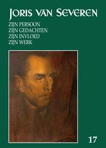

> nieuwsbrief > 2013 - nr 4
Inhoud
Grafkruis Robert Leuridan te Alveringem
We vernemen dat er op het kerkhof
in Alveringem een nieuw kruis werd geplaatst op het graf van
Robert Leuridan, met het embleem van het Verdinaso in beter
metaal en de aanduiding militant.
Men
zal zich herinneren dat we destijds (cf. Nieuwsbrief eerste
kwartaal 2012, p. 6) het gemeentebestuur van Alveringem gewezen
hebben op de deplorabele toestand waarin het grafkruis van deze
Dinaso-militant zich bevond. Thans is daaraan dus verholpen. We
houden er aan de gemeente onze erkentelijkheid te betuigen voor
de wijze waarop ze haar belofte tot restauratie nakwam.
Museum Hugo Verriest Joris van
Severen te Wakken heropend!
Op
zaterdag 7 september jl. werd te Wakken het nieuwe provinciaal
domein De Baliekouter met
enig feestgedruis plechtig geopend. De kern van het nieuwe
domein wordt gevormd door het oude Goed ter Mote waarvan
de hoevegebouwen omgevormd werden toe een cafetaria en een
educatief centrum. Binnen dit laatste vonden de museale
collecties van het vroegere museum Hugo Verriest Joris van
Severen een nieuw onderkomen. De werkgroep Wakken Herdenkt is
erin geslaagd er een pareltje temeer aan de Wakkense kroon van
te maken, mede dank zij de inzet van haar burgemeester Koen
Degroote en het Komitee Wakken Herdenkt.
Het is
binnen dit domein dat er op zaterdag 25 oktober 2014
andermaal een Colloquium Joris van Severen zal doorgaan;
gelegenheid waarbij tevens de grote Fotobiografie Joris van
Severen meteen ook het 18e Jaarboek Joris van Severen -
zal voorgesteld worden.
Noteer
alvast deze datum. Omtrent deze beide initiatieven colloquium
en fotobiografie wordt u via onze Nieuwsbrief in 2014
doorlopend geïnformeerd.
Fotobiografie Joris van Severen en het Verdinaso
Voor het jaar 2014 plannen wij binnen het
Studiecentrum Joris van Severen andermaal een jaarboek buiten
reeks.
De voorstelling van deze uitgave zal
kaderen binnen een Colloquium Joris van Severen dat in de
oktobermaand van 2014 te Wakken zal doorgaan.
In onze Nieuwsbrief zullen
we regelmatig op dit grootse project terugkomen, teneinde u
tijdig te informeren over de stand van zaken. Deze publicatie
buiten reeks, zal tevens als ons jaarboek voor 2014 fungeren.
Jaarboek
Joris van Severen 17 (2013)

De
controversiële Joris van Severen (1894-1940) is en blijft voer
voor gesprek en
debat in Vlaanderen.
Ook
dit 17e jaarboek bevat uittreksels uit het omstandige dagboek
van Joris van Severen, waaruit eens te meer blijkt dat zijn
persoonlijke gevoelens zijn scherpe analyses van het politieke
gebeuren afwisselen.
Romain
Van Landschoot analyseert het jaar 1924 als een belangrijk jaar
in het denken van Joris van Severen. Daarnaast brengt de
Noord-Nederlander
Dit
is geen
jaarboek louter voor specialisten en historici. Ook mensen die
niet vertrouwd zijn met de materie kunnen er heel wat van
opsteken, al zal ter kadering wat bijkomende lectuur altijd
nuttig kunnen zijn.
PM
__________________
Bron: Vlaams Belang
Magazine, juli-augustus 2013, p.
24.
Juul
Declercq werd geboren op 16 februari 1897 als eerste kind van
Camille Declercq, schoenmaker, en Marie Louise Cottenie.
Hij
trouwde Helena Maria Capelle op 14
Declercqs
ideeën evolueerden zeer sterk na de breuk met Aalst. Hij werd
een aanhanger van Van Severen en voorstander van het
corporatisme in een autoritair regime. Ook was Declercq in
oktober 1931 stichter van de Verdinaso-afdeling in Izegem en
werd hij lid van de Raad van Leiding binnen het Verdinaso. Samen
met Pol le Roy zorgde Declercq voor tal van propagandatochten,
de uitbouw via de oprichting van nieuwe afdelingen en
voordrachten. Daarnaast schreef hij diverse artikels over
syndicale en sociale kwesties. In zijn redevoeringen en artikels
beklemtoonde Declercq zijn afkeer voor partijpolitieke
syndicaten, liberalisme, kapitalisme en socialisme. Ook werd
Declercq belast met de uitbouw en het voorzitterschap van de
Samenwerkende Vennootschap Opbouw, een organisatie die belast
was met het verwerven en het financieel beheer van Dinasohuizen.
Juul Declercq aan het woord op een landdag van het
Verdinaso
Toen
de regering in 1933 maatregelen tegen het Verdinaso trof en de
jaarlijkse toelagen voor de werklozenkas van het NAS introk,
werd het vakverbond opgedoekt.
In mei
1934 werd hij aangesteld als gouwleider voor de provincie
Oost-Vlaanderen en hoofdman van de Gentse afdeling van het
Verdinaso. Ook nam hij voor korte tijd de leiding over het
Verbond van Dinaso Corporaties (VDC), de opvolger van het NAS.
Op 7 oktober 1934 werd Declercq propagandaleider van het
Verdinaso. Over heel Vlaanderen, en zelfs in Nederland,
propageerde hij 'Dietsland en Orde!' de
Dinaso-arbeiderspolitiek. Hij produceerde omzendbrieven met het
Verdinaso-programma erop, schreef talrijke artikels in het
tijdschrift Hier Dinaso!
en gaf toespraken op landdagen en Dinaso-meetings.
Toen
Van Severen in mei 1939 zwaar ziek werd, droeg deze zijn
functies gedeeltelijk over aan Pol le Roy die
secretaris-gevolmachtigde werd en belast werd met de lopende
zaken van het Verdinaso. Iets later werd Le Roy eveneens
aangeduid als propagandaleider en werd Declercq aan de deur
gezet. De reden hiervoor is niet gekend (volgens auteur
Jean-Marie Lermyte zou de plotse beslissing van Van Severen
onder meer te maken kunnen hebben gehad met de volkse houding
van Declercq enerzijds en de voorkeur van Joris van Severen voor
theorie en intellectualiteit anderzijds). In november 1939 vroeg
Van Severen aan Declercq om opnieuw de functies van hoofdman van
de afdeling Izegem en gewestleider van Roeselare-Tielt op zich
te nemen.
Tijdens
de oorlog werd Declercq opnieuw gouwleider van West-Vlaanderen.
Wel weigerde hij de aanstelling tot propagandaleider.
Ondertussen deed er zich een machtswissel voor binnen het
Verdinaso. Jef François nam na Emiel Thiers het leiderschap over
en startte onderhandelingen voor de integratie van het Verdinaso
in het Vlaams Nationaal Verbond (VNV). Declercq ging niet
akkoord met deze beslissing en schaarde zich in 1941 achter het
zogenaamde Directorium dat de leiding van Le Roy en Jef François
afwees.
In
1949 was hij nog medestichter van een solidaristische partij, de
Volksunie. De partij viel vrijwel meteen uit elkaar. Daarnaast
werkte hij ook nog mee met de groep-Louis Gueuning, een
gezelschap van voornamelijk oud-Dinaso's die misnoegd waren over
de koningskwestie. Declercq trad voor de laatste maal op als
redenaar op de door die groep georganiseerde Staten-Generaal op
13 en 14 september
In
1954 gaf hij zijn verzekeringskantoor over aan zijn zonen Cyriel
en Maurits. Op 58-jarige leeftijd stierf hij aan de gevolgen van
een hersenbloeding.
Bronnen: (Lermyte & Van Severen 2000-1070; Creve
1998-1256; De Wever 1998-1257).
_________________
http://www.odis.be/pls/odis/opacuvw.toon_uvw_2?CHK=PS_35039
Nog over het 17e Jaarboek Joris van Severen
Ondertussen
las ik ook het zeventiende Jaarboek Joris van Severen
. Eindredacteur Maurits Cailliau onderstreept in het Ten geleide dat uit de
nu gepubliceerde dagboekbladzijden (mei-september 1920) van
Joris van Severen blijkt hoezeer hij 'zich grondig kon ergeren
aan de mediocriteit van zijn medestrijders binnen de Vlaamse
Beweging'.
De eerste
Grote Synthese 1924, zo luidt de
titel van het doorwrochte essay van de voortreffelijke
historicus Romain Vanlandschoot (pp. 71-158) waarin Van Severens
diepgravende wijsgerige en staatkundige inzichten centraal
staan. Uit het tijdschrift Ter Waarheid citeert Vanlandschoot een passus 'die
het meest Joris van Severen typeert': 'Vlaanderen als een
homogeen Germaans element opvatten is naar mijn mening even
onjuist en verarmend, ontervend als Vlaanderen te willen
verfransen. Germaansheid en Latijnsheid groeien in de geest en
het gemoed der beste Vlamingen zo diep dooreen dat het mij
werkelijk anti- Vlaams schijnt, deze concentratie, deze
geestelijke concentratie te willen tegenwerken of belemmeren.
Het is immers volstrekt verkeerd deze concentratie van
Germaans-Latijnsheid, als Belgischheid in te denken. België is
inderdaad systematisch anti-Vlaams, terwijl deze Vlaamse
concentratie van Europeesheid instinctief, van nature
anti-Belgisch is. Deze Europeesheid voelt België aan als een
decadentie, als een aderverkalking, als een hoon. België is een
beschaving-dodend element. Een parasiet.' Ook dit tweede citaat
van Joris van Severen uit Ter
Waarheid illustreert diens scherpzinnige kordaatheid: 'Het
is een blijk van bekrompenheid en primaire achterlijkheid
vijandig te staan tegenover een volk en tegen een bepaalde vorm
van beschaving. Gemakkelijk wordt elk nationalisme in deze
domheid meegesleurd. Daarom is het de dringende plicht der
leiders van een volk het nationalisme uit dit onzinnig en
verderfelijk extremisme te redden. Zulkdanig extremisme is het
beste middel om het nationalisme in barbarie te doen uitslaan.'
De inzichten van Van Severen anno 1924 worden door Vanlandschoot
in de context geplaatst van gelijkaardige, vooroorlogse
inzichten van August Vermeylen en Karel van de Woestijne. Dit
belangrijk, voorbeeldig geadstrueerd essay beslaat meer dan
veertig procent van het Jaarboek. Eens te meer wordt de lezer
geconfronteerd met de intellectuele rijkdom van Joris van
Severens complex intellectueel universum.
Leven en
werken van Louis Gueuning (1898-1971)
worden in een verhelderend gesprek opgeroepen door zijn twee
discipelen en medestanders Joseph Peeters (°1924) en Vic
Eggermont (°1929).
De
Nederlandse historicus Ruud Bruijns publiceert het opstel Tussen rood en groen.
Joris van Severen, het Verdinaso en de socialisten.
Het
zeventiende jaarboek wordt afgesloten met zes haiku's van de
Brugse dichter en essayist Herwig Verleyen (°1946) Denkend aan Joris van
Severen'. De laatste is opgedragen aan Gaby Warris,
overlevende van de slachtpartij in Abbeville: Hoogbejaard krimp je steeds
meer terug tot het kind onder de kiosk.
Het
Jaarboek werd alvast in 't
Pallieterke van 5 juni besproken door 'De brave Hendrik'
(schuilnaam van CDR-medewerker Hendrik Carette).
______________
Bron: Henri-Floris Jespers, Losse
notities, in Centrum voor Documentatie &
Reëvaluatie Mededelingen
Elfde jaargang, nr. 211, pp. 10-11, 26 juni 2013.
Over Ter Waarheid in Ça ira!
'Germaansheid
en Latijnsheid groeien in de geest en het gemoed der beste
Vlamingen zo diep dooreen dat het mij werkelijk anti-Vlaams
schijnt, deze [...] geestelijke concentratie te willen
tegenwerken of belemmeren.' Voor hem was de taal duidelijk niét
gans het volk. Zo vond hij het Antwerpse, Franstalige Ça ira !
'een sympathiek tijdschrift': Zijn zeer jonge geweldige
zelfzekerheid en twijfelloos idealisme, is een blijde
verschijning. Er zit geloof in en liefde in overmoed ook
zeker
maar als een frisse wind is het. (Ter Waarheid , nr. 4,
april 1921, pp. 231-232)
De
sympathie was wederzijdse: in Ça ira! staat over Ter Waarheid te lezen:
Très certainement la meilleure revue critique paraissant en pays
flamand. Chaque numéro constitue un aperçu des plus complets de
l'activité intellectuelle, tant chez nous qu'à l'étranger. Ses
chroniques internationales sont rédigées avec une extrême
compétence et un sens aigu de l'idée moderne dans les différents
où elle se manifeste. (Ça
ira!, nr. 18, mei 1922, p. 168).
_____________
Bron: Henri-Floris Jespers, Losse
notities, in Centrum voor Documentatie &
Reëvaluatie Mededelingen,
Elfde jaargang, nr. 211, p. 12, 26 juni 2013.
In Vlaanderens velden, drie verkenningen langs het IJzerfront 14-18
is de
titel van het jongste boek van de Uitgeverij Egmont. Het werd
geschreven door Jan Huijbrechts (°1962) die daarmee niet aan
zijn proefstuk is.
Een
vroeg werk in de reeks die n.a.v. de 100ste
verjaardag van dit voor Europa zo dramatische conflict, dat in
ons geheugen geboekt staat als de Grote Oorlog, waarschijnlijk
nog het licht zal zien. Noem het literair ramptoerisme.
Dit
boek is geen gewone toeristische gids, omdat de auteur veel
aandacht besteed aan de dramatiek van de Vlaamse
IJzerfrontsoldaten en hun agitatie voor meer erkenning. Wat ons
niet mag verbazen als wij weten dat Egmont de uitgeverij van het
Vlaams Belang is. Inderdaad, het was tijdens deze oorlogsjaren
dat de Vlaamse rechtmatige eisen voor meer rechten
geradicaliseerd werden tot eisen voor Vlaamse autonomie. De auteur besteedt
trouwens ook aandacht aan de verlangens van andere kleine
volkeren: Bretoenen, Ieren, Welshmen, enz..
Je
voelt bij het lezen zo de sombere dreiging die uitging van het
verwoeste landschap, maar ook van de rauwe oorlogsrealiteit en
de miskenning tot in de dood toe van de Vlaamse piotten.
In dit werk wordt niet minder
dan 15 keer naar de naam Joris van Severen verwezen. Zonder een
oordeel te vellen, maar meestal verwijzend naar zijn de
historicus D. Vanacker.
Warm
aanbevolen in elk geval.
Vik
Eggermont
___________________
N.a.v.
J. Huijbrechts, In Vlaanderens velden,
Uitg. Egmont,191 pag. Met talrijke fotos en illustraties.
Op
zaterdag 8 juni had onze goede vriend Adolphe Evrard
de gezegende leeftijd van 94 jaar bereikt, op zondag 30 juni
heeft hij in de namiddag dit aardse leven verlaten. Zonder
lijden weliswaar, als het ware stilaan uitgedoofd, maar ook kalm
en zonder weeklagen. Hij wist dat zijn tijd gekomen was en hij
heeft het lot aanvaard.
Adolphe
was een van de merkwaardigste mensen die ik in mijn leven heb
ontmoet. Niet alleen christelijk gelovig, maar zelfs uitermate
vroom en ongelooflijk belezen. De Franstalige literatuur had
voor hem geen geheimen. Wat had hij niet gelezen? Niet alleen
een verstandig man, méér: een wijs man, zoals men er zelden
ontmoet. Had onze wereld maar meer dergelijke mensen
en
luisterde men maar meer naar hen! Ik heb herhaaldelijk het
voorrecht gehad met hem te mogen spreken, telkens was het voor
mij een genot, altijd stak ik er wat van op. En zijn brieven die
ik allemaal bewaard heb, nodigden niet alleen tot lezen, maar
ook tot meermaals her-lezen uit.
Hij
was een echte Henegouwer niet voor niets werd de achterkant
van zijn tuin zijn passie begrensd door de Samber - maar
bovendien stond hij met zijn volle persoonlijkheid achter de
idee van de Zeventien Provinciën. Hij leerde reeds in 1941 Louis
Gueuning kennen en volgde hem onmiddellijk in de Joris van Severen Orde
en dit tot het einde. Samen hebben zij vele gevaren getrotseerd.
Met hem ging één van de laatste van de zeldzaam nog levende,
maar uiterst trouwe leden van de Orde heen.
In memoriam Fons Janssens
geboren op 9 december 1926 in Sint-Lenaarts overleden in Hoboken
op 21 juni 2013. Fons Janssens groeide op in een
nationaal-solidaristisch nest: vader Albert was Dinaso-militant
en Fons was Jong-Dinaso en tamboer-major van de muziekkapel in
de schaar van Brasschaat onder leiding van Renaat Verbruggen.
Later bij de samensmelting van AVNJ en Dinaso-jeugd werd hij lid
van de Blauwvoetvendels van het NSJV. Hij was een door zijn
jongens zeer geliefde schaarleider.
In 1944 volgde hij het
voorbeeld van zijn kameraden en meldde zich voor de Waffen-SS.
Hij diende in het Jeugdbataljon van de divisie Langemarck.
Overrompeld door de Sovjets volgde gevangenschap in het Rode
Paradijs. Door zijn sterk geoefend gestel overleefde hij, om na
zijn vrijlating toch nog een paar jaar in Belgische
concentratiekampen te mogen verblijven. Hij zocht contact met
vroegere kameraden en kwam terecht in het Sint- Maartensfonds en
werd lid van het hoofdbestuur. Fons, die vele kameraden zag
sneuvelen en door de Roden had zien vermoorden wou hun graven
opzoeken. Na een avontuurlijke tocht, bijna dertig jaar geleden,
in de damalige DDR met Jef van Duffel en Fons Vingerhoets,
kwam hij in de dorpen aan de Uckermeren, op zoek naar de graven
van zijn gevallen kameraden. Hij wou zijn gevallen kameraden
blijvend gedenken, zocht een Steinmetz (steenkapper), ging
praten met de Pfarrer en de plaatselijke burgemeester. Fons kon
hen overtuigen en kreeg toestemming om op het massagraf in
Mescherin een gedenksteen te laten plaatsen. Dat was het begin
van de werkgroep Graven in het Oosten Er werden nog enkele
gedenkstenen aan de Oder opgericht. In de tijd van de
Perestroika kwam Fons door een toeval in contact met een
Russisch sprekende oud-mijningenieur, Frans van Robaeys, die
onmiddellijk bereid was hem te vergezellen bij zijn zoektochten,
eerst in de Ukraïne en Letland en dan in Rusland. Dank zij zijn
nooit aflatend doorzettingsvermogen werden op alle plaatsen waar
Vlamingen streden en sneuvelden, gedenkstenen opgericht.
Daarvoor moeten wij en onze nakomelingen Fons dankbaar zijn.
Maurits Vanderbruggen
Op
12 september 2013 overleed te Brugge mevrouw Gaby
Warris. Ze werd geboren te Utrecht op 7 april
1922. In het konvooi van de weggevoerden naar Abbeville in mei
1940 was zij de jongste getuige van het bloedbad aldaar. In 1994
legde zij daarover getuigenis af in haar boek Het bloedbad van Abbeville
20 mei 1940. Ze was een gewaardeerde kunstschilderes
wiens werk meermaals met prestigieuze onderscheidingen bekroond
werd. Dank zij haar onverdroten ijver kwam in de portiek van het
Bourgoensche Cruyce eertijds de woonplaats van Joris van
Severen te Brugge - de gedenkplaat tot stand voor de vier Brugse
slachtoffers van het bloedbad: naast haar grootmoeder Maria
Ceuterick, Joris van Severen, Jan Ryckoort en de communist Louis
Caestecker. Met
haar verdwijnt de
laatste overlevende van het bloedbad. De jaarlijkse
herdenkingsplechtigheid op die site, ingericht door het Brugse
Abbevillecomité in de voormiddag, gaat sinds enkele jaren
vooraf aan de herdenkingsmis voor Joris van Severen en zijn
lotgenoten ingericht door de Stichting Joris van Severen.
Maurits Cailliau
Onlangs
werd de hulp van ons Joris van Severen Studiecentrum gevraagd
voor een studie over het Verdinaso, Joris van Severen en het
dinaso-gedachtengoed dat momenteel gevoerd wordt aan
de
Universiteit van Miami in de V.S.A.! Dit op initiatief van het
Wolfson Instituut aldaar o.l.v. Prof. Mitchell Wolfson.
Het
spreekt voor zich dat ons Centrum met enthousiasme hieraan deel
neemt, een studie over ons gedachtengoed in Amerika, voorwaar
het is geen dagelijks gebeuren! Uiterst zelden wordt in Amerika
immers belangstelling getoond voor onze geschiedenis.
Alfons
van Opstal ()
Voor sommige militanten
en militantenleiders kon het de schijn hebben dat hun taak er
uitsluitend in bestond het Verbond op straat of bij
vergaderingen te beschermen. De nieuwe naam DMO die meteen
ook een nieuwe opdracht inhield, viel niet overal in goede aarde
bij hen die hun wortels hadden in de voorbijgestreefde Vlaamse
Militie, later Dinaso Militie.
Enigszins ontgoocheld
namen sommigen ontslag of werden ter beschikking gesteld voor
een proefperiode binnen de DMO. Een enkele maal dienden we nog
een straatgevecht te ondergaan. Het was alsof de Roden van de
Liga met haar arbeidersmilitie zich in een laatste sluiptrekking
wilden weren, nu bleek dat wij allesbehalve verdwenen of
weggeveegd waren.
Hun laatste hinderlaag
was immers hopeloos de mist ingegaan. Jan Morael was met zijn
manschappen naar Antwerpen gekomen om ons bij te staan bij de
opening van ons nieuw lokaal groter, voornamer, beter geschikt
dan het oude in de St.-Gummarusstraat in de Osystraat. Bij die
gelegenheid trad overigens Paul Persyn aan als de nieuwe
gouwleider.
Daar waren we s morgens
vertrokken voor een propaganda- en colportagetocht doorheen de
Noorderkempen. In de vroege ochtend traden we in marskolom aan
voor de vroegmis bij de paters op de nabijgelegen Ossenmarkt.
Daar huisde ook pater Max Wildiers, die in ons uitzonderlijke
beoefenaars zag van de vijf vreugden van de geest: religie,
wetenschap, geschiedenis, filosofie en esthetica.
Was dat zo? Zijn
appreciatie kon ons slechts verheugen en onze fierheid opwekken.
Hoe ook, de vroege misgangers en wandelaars onthielden hun
instemming niet. Na een rugzakontbijt met koffie ons bereid
door lokaal-houder Frans (een gewezen politieagent) en René
Dillen, reden we per fiets onze bestemming tegemoet. Rond 12.30
uur zat de colportage er op en reden we langs het atheneum de
Osystraat in. En daar werden we door ongenode gasten opgewacht.
Een massa Roden had in het lokaal van de havenarbeiderbond op
de Paardenmarkt vergaderd en er elkaar klaarblijkelijk ook
opgejut, stond er ons op te wachten. Zon
Niettemin genoten we ons
middagmaal (soep en brood) in een eerder onrustige sfeer: de
aanval had ons verrast en enigen onder ons hadden wonden te
likken. Nu werd ons duidelijk dat hun leider Louis Major onze
hinderlaag waarin hij twee weken eerder terecht gekomen was,
maar moeilijk had verteerd. Toen had Jan Morael hem voor zich
uitgedreven terwijl de held kermend om zijn moeder had geroepen.
De confrontatie had ons
bijgebracht dat we het straatgevecht na zo lange tijd en waar
nodig nog niet verleerd hadden. Na het middageten werd de
voorziene vormingsvoordracht vervangen door een leider- en
kameraadschappelijk samenzijn. Meteen brak de tijd aan om onze
4e landdag voor te bereiden: kaartenverkoop, aanplakdiensten,
verlengde colportages en huisbezoeken stonden voor de deur.
De leiding bij die
plakdiensten nam Jan Morael ter harte. Dat was een kolfje naar
zijn hand dat hij al sinds zijn jeugdjaren met brio beoefende.
Zijn vader was activist geweest en daarom in 1918 ontslagen als
postmeester, gevangen gezet geworden en
actief Fronter
geworden. Met zijn oudste kinderen aan de hand was hij op elke
passende betoging present geweest. Die ijzeren koppigheid bleek
ook zijn zoons eigen te wezen.
We hadden dat soort
klussen ook vroeger al wel, te voet en met de papemmer op weg
bedreven, maar nu, voor de aanstaande landdag, zagen we het wat
breder. Jan had de open vrachtwagen van een bouwondernemer weten
te charteren, waarop we de afficherollen en de papvaten stouwden
en in evenwicht hielden tijdens de lange rit. We begonnen te
Merksem, in de hoop de Antwerpse pakkenmannen te ontlopen. Onder
Jans leiding ging het snel en doelmatig: hij reed en waar hij
een geschikte aanplakgelegenheid bouwsel, schutting,
- zag
werd halt gehouden. En dat ging door van de valavond tot de
vroege morgen. Iedereen die s anderendaags langs de Bredabaan
tot aan de grens te Wuustwezel, en terug over Brecht, St.-Job,
Schilde, Wijnegem, Hoogstraten, Beerse, Gierle, Vosselaar,
Herentals, Lichtaart, Kasterlee, Geel, Olen, Heist op de Berg,
Aarschot, Westerlo, Meerhout, Mol of Nijlen, Kessel, Lier en
Boechout, onderweg was, werd er mee geconfronteerd. We kwamen
via Berchem Antwerpen weer binnen, toen de vroege kerkgangers
naar de 6-urenmis togen. De papvaten waren tot op de bodem
geledigd en we stonden ook zelf stijf van de pap!
De 4e landdag te
Sint-Kruis Male toonde de zinvolheid van onze inspanningen aan:
Het werd de landdag van de doorbraak en voor ons een hoogdag.
Zelf de pers schreef er meer vleiend dan hekelend over, en ook
over het eerste optreden van onze fanfare onder leiding van
schaarleider Jaak Schoepen.
In deze rubriek verwijzen we zonder veel
commentaar naar recente publicaties waarin Joris van Severen
en/of het Verdinaso vermeld worden. We citeren de meest
treffende passussen woordelijk zonder daarin volledigheid na
te streven. We verzoeken onze lezers, met ons, uit te zien
naar publicaties die voor deze rubriek 'stof' kunnen leveren
en ons kopie van de betreffende passages toe te sturen.
Omtrent naar Joris van Severen genoemde
straten
Joris
van Severenstraat: straat
in Lede genoemd naar Joris van Severen, oprichter van het Verdinaso
(Verbond van Dietse Nationaal Solidaristen).
Van
1943 tot november 1944 werd de Achterstraat: Joris van
Severen-straat.
Joris
van Severen werd geboren te Wakken op 19 juli 1894 als zoon van
een notaris en van moederszijde verwant met de Antwerpse
letterkundige Maria Belpaire. Van Severen groeide op in een
tweetalig, plattelands, Vlaams-voelend burgergezin.
Een
ietwat liberaal-katholieke opvoeding thuis en van 1903 af een
strenge opleiding bij de Jezuïeten aan het Sint-Barbaracollege
te Gent, hebben hem diep getekend. Eénmaal aan de Gentse
universiteit ingeschreven voor de studie van de rechten,
ontplooide hij een aanzienlijke activiteit. Hij werd toen
voorzitter van de Rodenbachs Vrienden en hielp mee
aan de Hugo Verriest-hulde op 17 juli 1903. Op 24 september 1914
werd hij opgeroepen naar Lier, depot van het negende
Linieregiment. In 1917 werd hij luitenant. Hij werd politiek
actief in 1921 toen hij tot volksvertegenwoordiger werd
verkozen. Op 6 oktober 1931 kondigde hij officieel de oprichting
af van het Verbond van Dietse Nationaal Solidaristen
(Verdinaso). In 1933 reisde hij naar Nederland voor een
ontmoeting met Anton Mussert, leider van de Nationaal-Socialistische
Beweging
(NSB). Dit soort van Groot-Neerlandis-me en de
gedachte-evolutie veroorzaakte een eerste grote breuk, o.a. die
met Wies Moens. In de loop der jaren zouden er nog meer volgen.
Op 10 mei 1940 werd hij aangehouden door de Staatsveiligheid.
Vier dagen later kwamen de gevangenen aan in Abbeville. Op 20
mei 1940 begonnen Franse soldaten een wilde schietpartij,
waarbij Van Severen dodelijk gewond werd.
____________________
http://www.lede.be/file_uploads/5025.pdf
Noot van
de Nieuwsbrief-redactie: Mussert is slechts een enkele maal op bezoek
geweest bij Joris van Severen, die op 22 september 1933
daarover in zijn agenda noteerde: 13 u 35. Bezoek 'door puur
toeval' van Anton Mussert via Motke (gewezen Hollandse
officier die hier dicht bij mij is komen wonen). Hij blijft 45
minuten. Indruk: een zelfgenoegzaam klein bourgeois die niets
begrijpt van de 'nieuwe tijd' en niet zal lukken. Dat Mussert
van belang zou geweest zijn in Van Severens omslag naar de
nieuwe marsrichting is dus klinkklare onzin.
En nog een
In
Kortrijk: Van de Markestraat tot de Rode Dreef. Aangelegd in het
begin van de 20e eeuw, noordelijk deel dateert van 1936 en werd
in 1938 doorgetrokken tot aan de Rode Dreef. In de volksmond
"Zakstraat" of "Nieuwstraat" genoemd. Tijdens de Tweede
Wereldoorlog gebruikte men de benaming Joris van Severenstraat,
naar de stichter en leider van het Verdinaso. Onmiddellijk na de
Tweede Wereldoorlog werd de naam gewijzigd in Hektor
Casteleinstraat, naar een gesneuvelde verzetsman uit Marke.
________________
https://inventaris.onroerenderfgoed.be/dibe/geheel/8785
In het cultureel centrum van het West-Vlaamse Wakken
werd op 16 september 2002 een colloquium gehouden met de jonge
historicus Bart de Wever als gastspreker.
Van Severen was een markante figuur in het
Vlaams-nationalisme tussen de twee wereldoorlogen in de vorige
eeuw. Ook hij was aanhanger van de Groot-Nederlandse gedachte.
De gebroeders De Wever schreven in 1999: Tegelijk stuurde hij
aan op een totale breuk met de democratische praxis.
Groot-Nederland stond in functie van een fascistische droom. (
)
Dat het nationale doel nochtans in functie bleef staan van het
fascistisch machtsstreven bleek uit het gemak waarmee Van
Severen al in 1934 het nationaal territorium van Groot-Nederland
wijzigde. De Nieuwe Mars-richting bepaalde dat het Verdinaso
de macht zou grijpen in de Belgische ruimte. De Walen werden
later beschouwd als romaanse Dietsers en nog even later bouwde
het Verdinaso een Belgisch patriottisch imago uit (
) Van
Severen was verplicht om andere funderingen te leggen. Hij zocht
ze in het Bourgondische verleden, in racistische theorieën en in
de Belgische dynastie.
Van Severen werd na de Duitse inval in mei 1940 door
de Belgische autoriteiten opgepakt. Hij werd korte tijd nadien
door Franse soldaten doodgeschoten in Abbeville.
De Wever bracht een stevig gedocumenteerd referaat
over het naoorlogse Vlaams-nationalisme en de rol van de
volgelingen van Van Severen. Nooit te beroerd voor cassante
uitspraken stelde hij:
Maar bovendien stelde De Wever dat recent onderzoek
uitwijst dat de succesformule van radicaal rechts vandaag zou
liggen in de combinatie van politiek en cultureel conservatisme
enerzijds en een resoluut marktgerichte keuze op
sociaaleconomisch vlak anderzijds. Zoals het N-VA zich nu
profileert.
_________________
Bron: http://www.dewereldmorgen.be/blogs/janwillems/2012/08/19/de-rode-pet-van-bart-de-wever
(1)
Dit referaat van Bart de Wever werd ook integraal en
geïllustreerd gepubliceerd in ons Jaarboek Joris van Severen,
deel 5, 2001, pp. 117-205.
Heibel: Willy
Copmans over Piet van Aken en Joris van Severen
Heibel, 'het blad zonder blad (voor de
mond)', verschijnt tweemaal per jaar (april en oktober) onder
redactie van Frans Depeuter en Robin Hannelore.
In de jongste aflevering borstelt
Willy Copmans een portret ten voeten uit van Piet van Aken, 'de
laatste der Mohikanen?' (pp. 29-37). Hij stelt m.i terecht dat De
Verraders (Antwerpen, Ontwikkeling, 1962) het vreemdste
boek dat Van Aken ooit geschreven heeft.
'
Piet van Aken heeft voor de oorlog
vaak straatgevechten geleverd met de Dinaso's. In De
verraders schetst hij:
'een merkwaardig beeld van de eerste oorlogsdagen,
waarin hij zijn aversie toont voor uniformen en de
machtswellust die daaruit voortvloeit, zoals overigens later
ook duidelijk werd in Agenda van een heidens lezer: wie in wellust een uniform dragen, kunnen op mijn
eeuwigdurende verachting rekenen. De Verraders is een geschiedenis, hallucinant soms, die de
volgende generaties absoluut niet mogen vergeten'.
________________
Bron: Mededelingen van
het Centrum voor Documentatie & Reëvaluatie, 11 juni 2013.